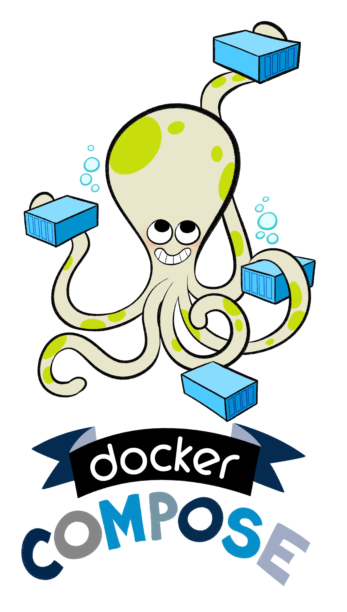
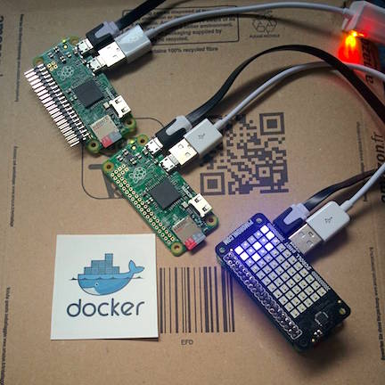

Dockerize Stuff

Postgis Swarm And More
StefanKüthe@FOSSGIS 2018
It´s written in

Operating System Level Virtualization
Spin up 100 nginx containers in less than 1 minute
$ time for i in $(seq 1 100); do \
docker run -d -P --name nginx_$i nginx:alpine \
done
0m56.476s
Images and Containers

Image
“An image is a lightweight, stand-alone, executable package that includes everything needed to run a piece of software, including the code, a runtime, libraries, environment variables, and config files.“
Dockerfile
FROM ubuntu:16.04
LABEL maintainer="Stefan Kuethe"
RUN apt-get update \
&& apt-get install python-mapnik -y --no-install-recommends \
&& apt-get autoremove -y \
&& rm -rf /var/lib/apt/lists/*
COPY ./data /mapnik/example
WORKDIR /mapnik/example
CMD ["python", "generate_tiles.py", "map_file.xml"]
Container
“A container is a runtime instance of an image[...]“
“It runs completely isolated from the host environment by default, only accessing host files and ports if configured to do so.“
Virtual Machines?
Hardware Virtualization
Docker Vs VMs
Docker and VMs
Postgis in a box
Pull it
$ docker pull mdillon/postgis
Using default tag: latest
latest: Pulling from mdillon/postgis
974c2c350dc4: Downloading [========================> ] 22.46 MB/45.13 MB
...
Run it
$ docker run -d --name postgis \
-e POSTGRES_PASSWORD=docker \
-p 55432:5432 \
mdillon/postgis
d4fdb5c6b51b4463a3244ead0247640998bbcdb900f7ca6f2ce08206b5bfbc3a
$ docker ps
CONTAINER ID IMAGE ... PORTS NAMES
8efe6f9e6132 mdillon/postgis ... 0.0.0.0:55432->5432/tcp postgis
Networks in Docker


bridge, overlay, ...
bridge
“... are best when you need multiple containers to communicate on the same Docker host.“
$ docker network create fossgis
$ docker run --network fossgis \
--name postgis -p 55432:5432 -d mdillon/postgis
$ docker run --network fossgis \
--name geoserver -p 58080:8080 -d kartoza/geoserverInspect network
$ docker network inspect fossgis
{
"5c8b8cf8c7631c028694653e3d35f72d709ab6c9a3fb6b7e127de6993685d10d": {
"Name": "geoserver",
"EndpointID": "d63198bdab9b9edcf641ecedd2b21853af8c35e574b6e3347ce4fff42baa8163",
"MacAddress": "02:42:ac:13:00:03",
"IPv4Address": "172.19.0.3/16",
"IPv6Address": ""
},
"e500639420b3f26781652105402bae57e759905514e0f81550450783da35ce61": {
"Name": "postgis",
"EndpointID": "c6fd0c7388182ade5e600fda374a4e8d220e26b88f66aebf59fb8c747ebd6b1f",
"MacAddress": "02:42:ac:13:00:02",
"IPv4Address": "172.19.0.2/16",
"IPv6Address": ""
}
}overlay
“... are best when you need containers running on different Docker hosts to communicate, or when multiple applications work together using swarm services.“
$ docker network create --driver overlay fossgis_swarm
$ docker service create \
--network fossgis_swarm mdillon/postgisDocker Compose
Compose File
version: "2"
services:
postgis:
image: mdillon/postgis
ports:
- "55432:5432"
environment:
- POSTGRES_PASSWORD=docker
geoserver:
image: kartoza/geoserver
ports:
- "58080:8080"Run services
# Assuming your 'docker-compose.yml'
# is located in a folder called 'docker'
$ cd docker
$ docker-compose up -d
Creating network "docker_default" with the default driver
Creating docker_postgis_1
Creating docker_geoserver_1
$ docker ps
CONTAINER ID IMAGE ... PORTS NAMES
2e800f486389 kartoza/geoserver ... 0.0.0.0:58080->8080/tcp docker_geoserver_1
8efe6f9e6132 mdillon/postgis ... 0.0.0.0:55432->5432/tcp docker_postgis_1
Orchestration
Docker Swarm
Since Docker version 1.12
Managers and Workers
Manager

# Create a manager
$ docker swarm init --advertise-addr 192.168.99.100
# Generate the token needed to join the manager
$ docker swarm join-token workerWorkers
# Join the manager
docker swarm join --token [...] 192.168.99.100:2377Deploy a service
$ docker service create \
--replicas 2 \
--name helloworld \
alpine ping docker.comPostgis Cluster
with Docker Swarm
and Postgis Containers by Chrunchy Data
Swarm Setup
See slides to Docker Swarm
Network Setup
Create an overlay network on the manager node
$ docker network create --driver overlay postgis_swarmMaster Setup
Add label to worker1
$ docker node update --label-add type=master worker1Create master (primary)
#!/bin/bash
MASTER_SERVICE_NAME="postgis-master"
docker service create \
--publish "5432:5432" \
--mount type=volume,src=$MASTER_SERVICE_NAME-volume,dst=/pgdata,volume-driver=local \
--name $MASTER_SERVICE_NAME \
--network postgis_swarm \
--constraint 'node.labels.type == master' \
--env PGHOST=/tmp \
--env PG_USER=testuser \
--env PG_MODE=primary \
--env PG_PRIMARY_USER=master \
--env PG_ROOT_PASSWORD=password \
--env PG_PASSWORD=password \
--env PG_DATABASE=userdb \
--env PG_PRIMARY_PORT=5432 \
--env PG_PRIMARY_PASSWORD=password \
--env PGDATA_PATH_OVERRIDE=persistent \
crunchydata/crunchy-postgres-gis:centos7-10.0-1.6.0
Primary options in detail
- --mount
type=volume,
src=$MASTER_SERVICE_NAME-volume,
dst=/pgdata,
volume-driver=local - --network postgis_swarm
- --constraint 'node.labels.type == master'
- --env PG_MODE=primary
- --env PGDATA_PATH_OVERRIDE=persistent
List services
$ docker service ls
ID NAME MODE REPLICAS IMAGE
xvfgad0i2mgv postgis-master replicated 1/1 crunchydata/crunchy-postgres-gis:centos7-10.0-1.6.0
Create worker
#!/bin/bash
MASTER_SERVICE_NAME="postgis-master"
SERVICE_NAME=postgis-worker
VOLUME_NAME=$SERVICE_NAME-volume
docker service create \
--publish "15432:5432" \
--mount type=volume,src=$VOLUME_NAME,dst=/pgdata,volume-driver=local \
--name $SERVICE_NAME \
--network postgis_swarm \
--constraint 'node.labels.type != master' \
--env PGHOST=/tmp \
--env PG_USER=testuser \
--env PG_MODE=replica \
--env PG_PRIMARY_USER=master \
--env PG_ROOT_PASSWORD=password \
--env PG_PASSWORD=password \
--env PG_DATABASE=userdb \
--env PG_PRIMARY_PORT=5432 \
--env PG_PRIMARY_PASSWORD=password \
--env PG_PRIMARY_HOST=$MASTER_SERVICE_NAME \
--env PGDATA_PATH_OVERRIDE=persistent \
crunchydata/crunchy-postgres-gis:centos7-10.0-1.6.0
Worker options in detail
- --mount
type=volume,
src=$MASTER_SERVICE_NAME-volume,
dst=/pgdata,
volume-driver=local - --network postgis_swarm
- --constraint 'node.labels.type != master'
- --env PG_MODE=replica
- --env PGDATA_PATH_OVERRIDE=persistent
List services again
$ docker service ls
ID NAME MODE REPLICAS IMAGE
s9eyg3kvn0mz postgis-worker replicated 1/1 crunchydata/crunchy-postgres-gis:centos7-10.0-1.6.0
xvfgad0i2mgv postgis-master replicated 1/1 crunchydata/crunchy-postgres-gis:centos7-10.0-1.6.0
Test Postgis cluster
# Show on which node your Postgis instances are running
$ docker service ps postgis-master
$ docker service ps postgis-worker
$ docker exec \
-it $(docker ps -q --filter name=postgis-master*) bash
bash-4.2$ psql -U postgres -c 'table pg_stat_replication' postgres
# You should see a row for each replica
# along with its replication status.
Create GeoServer
#!/bin/bash
docker service create \
--publish "48080:8080" \
--name geoserver_swarm \
--network postgis_swarm \
--constraint 'node.labels.type == master' \
kartoza/geoserver
Create GeoServer using Docker Compose
version: "3"
services:
geoserver:
image: kartoza/geoserver
ports:
- "48080:8080"
networks:
- postgis_swarm
deploy:
placement:
constraints: [node.labels.type == master]
networks:
postgis_swarm:
external: true
# docker stack deploy -c docker-compose.yml geoserver
The End
Hey ho
Stefan Küthe
stefan.kuethe@manserv.de